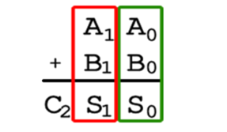
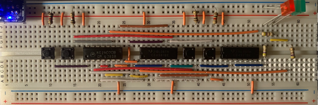
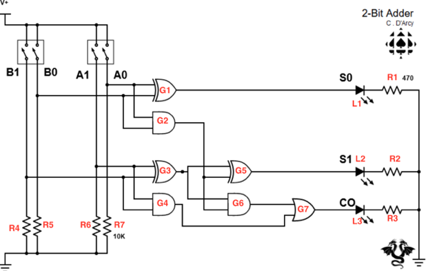
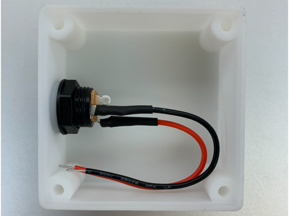
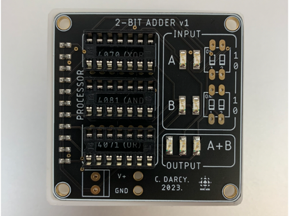
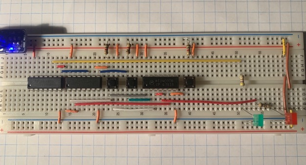

2023 · Digital Logic
2-Bit Adder
Built a 2-bit binary adder using CMOS XOR, AND, and OR gates. The circuit accepts two 2-bit inputs and displays the binary result from 0 to 6 using LED outputs, then moves from breadboard prototype to finished PCB device.

Video Demonstration
Working demonstration
The project video shows the physical build, behaviour, and final result.
 ▶ Watch on YouTube
▶ Watch on YouTube
Project Overview
Build arithmetic from logic gates instead of software.
This project required tracing carry logic through a half-adder and full-adder so that every LED output represented the correct binary sum.
What I built
- Half-adder stage for the least significant bit
- Full-adder stage for the next bit and carry-in
- Breadboard prototype using discrete CMOS logic ICs
- Final PCB device with case and labelled outputs
Technical Skills
Skills demonstrated
Combinational logic
Applied directly in the design, build, debugging, or final integration of the project.
Truth tables
Applied directly in the design, build, debugging, or final integration of the project.
Binary arithmetic
Applied directly in the design, build, debugging, or final integration of the project.
PCB/device assembly
Applied directly in the design, build, debugging, or final integration of the project.
Build Story
Logic graphics, breadboard prototype, and final PCB build
Final PCB device
The image to the right shows the compact breadboard prototype for the 2-bit adder, where XOR, AND, and OR gates combine the four input bits into a binary LED output.

Adder logic graphic
The image to the right shows the labelled circuit diagram for the 2-bit adder, mapping each PBNO input through the logic-gate network to the sum and carry outputs.

Circuit diagram
The image to the right shows the inside of the final 2-bit adder case, including the power jack wiring and internal space used to package the PCB.

Full-adder prototype
The image to the right shows the final PCB-based 2-bit adder, replacing the temporary breadboard inputs with rocker switches, labelled LEDs, and a cleaner device layout.

Half-adder prototype
The image to the right shows the full-adder breadboard prototype, which handles the second bit and incorporates the carry output from the half-adder stage.
